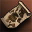
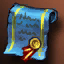
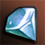
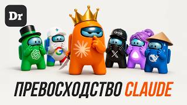

Тестирование (QA)
- Чем занимаешься
- Ищешь ошибки в сайтах и приложениях и описываешь их.
- Чем помогает Claude
- Объясняет виды тестов, проверяет твои отчёты об ошибках.
- Пробное задание
- Найти и описать 5 ошибок на любом сайте.
Гайд для Жени Соловья · 26 октября 2026
Впереди длинная игра, и проходить её ты будешь не один. Сначала знакомишься с напарником — Claude. Потом вместе выбираете класс, качаетесь на реальных задачах и выходите на работу. В финале у тебя профессия, удалённая работа и жизнь в своём ритме.
Напарник уже настроен. Я пришлю тебе файл навыка: ставишь его один раз, и Claude становится твоим наставником. Он знает весь маршрут, сам предлагает задания и помнит, где ты остановился. Копировать и вставлять ничего не нужно.
Курсы не покупай: там скучно, и с них сливаются на середине. Claude объясняет столько раз, сколько нужно, и сразу даёт практику.

Отмечай выполненные задания: опыт копится, уровень растёт. Прогресс сохраняется на этом устройстве.
Глава 1 · 1–2 недели
Цель главы — поставить Claude, подключить наставника и привыкнуть работать с ним каждый день.
Claude — ИИ-ассистент от компании Anthropic. Пишешь ему обычным языком, как в мессенджере, а он отвечает, объясняет и делает. Поисковик выдаёт ссылки, а Claude решает задачу вместе с тобой.
Claude может ошибаться, причём уверенно. Важные факты проверяй.
Россию и Беларусь Anthropic официально не обслуживает: их нет в списке стран. Как заходить, я тебе уже объяснил. Если что-то не открывается или просит подтверждение, сразу пиши мне.
Не покупай готовые или общие аккаунты у посредников. Чужой аккаунт могут заблокировать, и вся твоя переписка пропадёт вместе с ним.

Навык — это свиток с инструкциями для Claude. В этом свитке весь твой путь: кто ты, куда идёшь, как тебя учить и какие задания давать. Ставится один раз, лучше с компьютера.
Названия кнопок иногда меняются. Не нашёл — сфотографируй экран и спроси Claude, куда нажать, или пиши мне. Подробно — в справке Anthropic про навыки.
Чат на сайте, в приложении и на телефоне, поиск в интернете, файлы, артефакты, память, навыки, до 5 проектов.
Для старта хватит
Минимум в 5 раз больше сообщений, чем на Free, плюс Claude Code, Claude в Chrome и больше моделей. При оплате за год — 17 $ в месяц (200 $ сразу).
Когда упрёшься в лимит и начнёшь учиться каждый день
В 5 или 20 раз больше, чем Pro, и ранний доступ к новинкам.
На старте не нужен
Цены с claude.com/pricing на 26.10.2026. Лимит считается окнами по 5 часов: кончились сообщения — подожди или переходи на Pro. Как оплатить, подскажу.
С ними поможет наставник: спроси его, и он проведёт по шагам.
Наставник даёт по одному в день, 30–60 минут. Здесь отмечай, что прошёл.
Пользуешься Claude каждый день и понимаешь, что он умеет.
Глава 2 · 3–6 вечеров
Класс выбирают надолго, поэтому не бери профессию по рекламе курсов. Скажи наставнику «давай выбирать класс». Он расспросит тебя, предложит три направления и даст попробовать каждое руками.
Спрос и зарплаты меняются, поэтому свежую картину рынка спрашивай у наставника с включённым поиском.
Попробовал три направления руками, и одно по-настоящему затягивает.
Глава 3 · 8–12 недель
Наставник составит учебный план и будет вести каждое занятие по кругу: коротко объясняет тему, даёт задание, ты делаешь сам, он проверяет и задаёт вопросы на понимание.
Главное правило: пусть Claude делает вместе с тобой, а не вместо тебя. Наставник специально сначала даёт подсказку, а не готовый ответ. Работодателю нужен человек, который понимает свою работу и умеет делать её быстрее с ИИ.
В портфолио 3–5 законченных работ, и про каждую можешь рассказать сам.
Глава 4
Здесь ты ищешь свою гильдию — компанию или заказчиков. Наставник готовит тебя к каждому шагу.
На собеседовании не скрывай, что работаешь с ИИ. Расскажи, как он ускоряет твою работу и как ты проверяешь его ответы.

Финал
Первая удалённая работа или первый постоянный заказчик. Ты специалист: работаешь из дома и сам решаешь, где и как жить.
Игра на этом не заканчивается. Claude становится сильнее с каждым обновлением, и ты качаешься вместе с ним.
Библиотека
Смотри по порядку и сразу пробуй увиденное у себя. Все ролики проверены 26.10.2026: они на русском и вышли в 2026 году. Нажми на карточку — откроется YouTube.
 Claude: полный старт для новичка — регистрация, настройки, проекты, артефактыСухов:Live · 44 минВо время настройки
Claude: полный старт для новичка — регистрация, настройки, проекты, артефактыСухов:Live · 44 минВо время настройки
 Полный курс по Claude на 2026 год (от нуля до профи)Кайсар Курмангалиев · 50 минГлава 1
Полный курс по Claude на 2026 год (от нуля до профи)Кайсар Курмангалиев · 50 минГлава 1
 Инструкция к Claude Projects: полный разборAI Прорыв · 18 минПеред главой 3
5 уровней владения Claude: на каком застрял ты?AI Прорыв · 24 минКонец главы 1
Инструкция к Claude Projects: полный разборAI Прорыв · 18 минПеред главой 3
5 уровней владения Claude: на каком застрял ты?AI Прорыв · 24 минКонец главы 1

Почему Claude AI — лучший?Droider · 32 минДля мотивации Claude: цифровой сотрудник, который умеет всёВизави · 18 минДля мотивации Большой гайд по Claude: вот что я понял за 1000 часовНейропросвещение · 59 минЧерез месяц Полный курс Claude 2026 на 3 часа: Cowork, скиллы, субагенты, MCPНикита Велс · 2 ч 45 минПродвинутый Claude Code с нуля, урок 1: что это и как пользоватьсяГоша Дударь · 7 мин, дальше серияГлава 3
Claude Code с нуля, урок 1: что это и как пользоватьсяГоша Дударь · 7 мин, дальше серияГлава 3
 Claude Code с нуля: полный курс в одном видеоШкола itProger · 1 ч 8 минГлава 3
Claude Code с нуля: полный курс в одном видеоШкола itProger · 1 ч 8 минГлава 3
 Дай мне 20 минут, и ты получишь 10 000 часов знаний о Claude CodeАртём Воронков · 21 минГлава 3
Дай мне 20 минут, и ты получишь 10 000 часов знаний о Claude CodeАртём Воронков · 21 минГлава 3
 Claude Code: полный курс для начинающих (2026)Никита Ефимов · 1 ч 13 минГлава 3
Claude Code: полный курс для начинающих (2026)Никита Ефимов · 1 ч 13 минГлава 3
Интерфейс Claude часто обновляется: в роликах кнопки могут стоять иначе. Курсы, которые авторы рекламируют в видео, тебе не нужны. Советы про регистрацию из России в роликах бывают разные — по доступу сначала поговори со мной.
Библиотека
Лучшие бесплатные материалы делает сама Anthropic в своей Академии. Курсы на английском: включай перевод страницы в браузере или попроси наставника пересказать урок по-русски.
Вопросы про настройки и тарифы — в справочном центре или прямо у наставника.
Защита